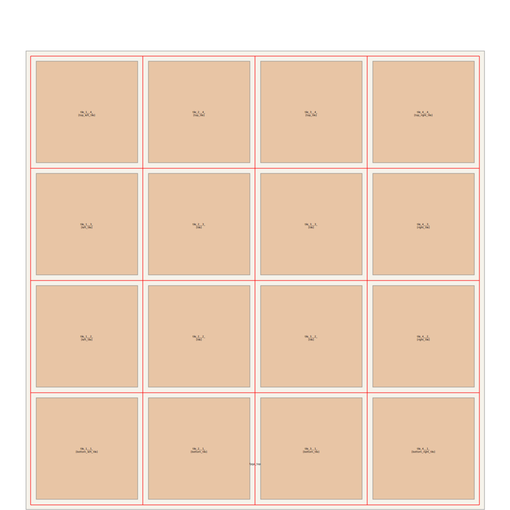

Note
Click here to download the full example code
5.9. Generating and Floorplanning Area-optimized FPGA Tiles¶
This example demonstate how to create a tile strcuture from Verilog netlist obtained from OpenFPGA
{kind=link}
import glob
import logging
from pathlib import Path
import tempfile
from itertools import chain
from os import path
import spydrnet as sdn
from spydrnet_physical.util import (FloorPlanViz, Tile01,
GridFloorplanGen, OpenFPGA)
logger = logging.getLogger('spydrnet_logs')
sdn.enable_file_logging(LOG_LEVEL='INFO')
PROP = "VERILOG.InlineConstraints"
def main():
proj = '../homogeneous_fabric'
source_files = glob.glob(f'{proj}/*_Verilog/lb/*.v')
source_files += glob.glob(f'{proj}/*_Verilog/routing/*.v')
source_files += glob.glob(f'{proj}/*_Verilog/sub_module/*.v')
source_files += glob.glob(f'{proj}/*_Verilog/fpga_top.v')
# Temporary fix to read multiple verilog files
with tempfile.NamedTemporaryFile(suffix=".v") as fp:
for eachV in source_files:
with open(eachV, "r") as fpv:
fp.write(str.encode(" ".join(fpv.readlines())))
fp.seek(0)
netlist = sdn.parse(fp.name)
fpga = OpenFPGA(grid=(4, 4), netlist=netlist)
fpga.design_top_stat()
# Convert wires to bus structure
fpga.create_grid_clb_bus()
fpga.create_grid_io_bus()
fpga.create_sb_bus()
fpga.create_cb_bus()
# Remove undriven nets
fpga.remove_undriven_nets()
fpga.remove_config_chain()
# Convert top level independent nets to bus
for i in chain(fpga.top_module.get_instances("grid_clb*"),
fpga.top_module.get_instances("grid_io*"),
fpga.top_module.get_instances("sb_*")):
for p in filter(lambda x: True, i.reference.ports):
if p.size > 1 and (i.check_all_scalar_connections(p)):
cable_list = []
for pin in p.pins[::-1]:
cable_list.append(i.pins[pin].wire.cable)
cable = fpga.top_module.combine_cables(
f"{i.name}_{p.name}", cable_list)
cable.is_downto = False
# Before Creating Tiles
fpga.design_top_stat()
# Merge grid IOs
fpga.merge_all_grid_ios()
# Create area-optimized tiles
fpga.register_tile_generator(Tile01)
fpga.create_tiles()
# After Creating Tiles
fpga.design_top_stat()
Following section is for rendering only
# = = = = = = = = = = = = = = = = = = = = = = = = = = = = = =
# Floorplan visualization
# = = = = = = = = = = = = = = = = = = = = = = = = = = = = = =
# Create grid plan
grid_plan = GridFloorplanGen(4, 4, grid_x=220, grid_y=220)
grid_plan.offset_x = 10
grid_plan.offset_y = 10
for module in fpga.top_module.get_definitions("*tile*"):
module.data[PROP]["WIDTH"] = 200
module.data[PROP]["HEIGHT"] = 200
module.data[PROP]["COLOR"] = "#E6BA95"
for xi in range(4, 0, -1):
for yi in range(4, 0, -1):
X_OFFSET, Y_OFFSET = 10, 10
points = grid_plan.get_x_y(xi-1, yi-1)
try:
inst = next(fpga.top_module.get_instances(f"*_{xi}__{yi}_*"))
refname = inst.reference.name
except StopIteration:
continue
inst.data[PROP]['LOC_X'] = points[0] + X_OFFSET
inst.data[PROP]['LOC_Y'] = points[1] + Y_OFFSET
fpga.top_module.data[PROP]["WIDTH"] = grid_plan.width + 20
fpga.top_module.data[PROP]["HEIGHT"] = grid_plan.height + 20
fpga.save_shaping_data("*", scale=0.01, filename="_tile01_shaping.txt")
# = = = = = = = = = = = = = = = = = = = = = = = = = = = = = =
# Visualize floorplan
# = = = = = = = = = = = = = = = = = = = = = = = = = = = = = =
fp = FloorPlanViz(fpga.top_module)
fp.compose(skip_connections=True, skip_pins=True)
dwg = fp.get_svg()
dwg.add(grid_plan.render_grid(return_group=True))
dwg.saveas("_tile01_floorplan.svg", pretty=True, indent=4)
# Save netlist
base_dir = "_output_tile01"
Path(base_dir).mkdir(parents=True, exist_ok=True)
fpga.save_netlist("sb*", path.join(base_dir, "routing"))
fpga.save_netlist("cb*", path.join(base_dir, "routing"))
fpga.save_netlist("grid*", path.join(base_dir, "lb"))
fpga.save_netlist("*tile*", path.join(base_dir, "tiles"))
fpga.save_netlist("fpga_top", path.join(base_dir))
if __name__ == "__main__":
main()
5.9.1. Output Shaping File¶
INSTANCE MODULE LOC_X LOC_Y SHAPE BBOX_PT POINTS
= = = = = = = = = = = = = = = = = = = = = = = = = = = = = = = = = = = = = = = = = = = = = = = = = = = = = = = = = = = =
tile_2__2_ tile 0.90 0.90 rect 4 0.000 0.000 0.000 2.000 2.000 2.000 2.000 0.000
tile_2__3_ tile 0.90 3.10 rect 4 0.000 0.000 0.000 2.000 2.000 2.000 2.000 0.000
tile_2__4_ tile 0.90 5.30 rect 4 0.000 0.000 0.000 2.000 2.000 2.000 2.000 0.000
tile_3__2_ tile 3.10 0.90 rect 4 0.000 0.000 0.000 2.000 2.000 2.000 2.000 0.000
tile_3__3_ tile 3.10 3.10 rect 4 0.000 0.000 0.000 2.000 2.000 2.000 2.000 0.000
tile_3__4_ tile 3.10 5.30 rect 4 0.000 0.000 0.000 2.000 2.000 2.000 2.000 0.000
tile_4__2_ tile 5.30 0.90 rect 4 0.000 0.000 0.000 2.000 2.000 2.000 2.000 0.000
tile_4__3_ tile 5.30 3.10 rect 4 0.000 0.000 0.000 2.000 2.000 2.000 2.000 0.000
tile_4__4_ tile 5.30 5.30 rect 4 0.000 0.000 0.000 2.000 2.000 2.000 2.000 0.000
tile_5__2_ right_tile 7.50 0.90 rect 4 0.000 0.000 0.000 2.000 2.000 2.000 2.000 0.000
tile_5__3_ right_tile 7.50 3.10 rect 4 0.000 0.000 0.000 2.000 2.000 2.000 2.000 0.000
tile_5__4_ right_tile 7.50 5.30 rect 4 0.000 0.000 0.000 2.000 2.000 2.000 2.000 0.000
tile_2__5_ top_tile 0.90 7.50 rect 4 0.000 0.000 0.000 2.000 2.000 2.000 2.000 0.000
tile_3__5_ top_tile 3.10 7.50 rect 4 0.000 0.000 0.000 2.000 2.000 2.000 2.000 0.000
tile_4__5_ top_tile 5.30 7.50 rect 4 0.000 0.000 0.000 2.000 2.000 2.000 2.000 0.000
tile_1__5_ top_left_tile 0.20 7.50 rect 4 0.000 0.000 0.000 2.000 0.500 2.000 0.500 0.000
tile_5__5_ top_right_tile 7.50 7.50 rect 4 0.000 0.000 0.000 2.000 2.000 2.000 2.000 0.000
tile_1__1_ bottom_left_tile 0.20 0.20 rect 4 0.000 0.000 0.000 0.500 0.500 0.500 0.500 0.000
tile_5__1_ bottom_right_tile 7.50 0.20 rect 4 0.000 0.000 0.000 0.500 2.000 0.500 2.000 0.000
tile_1__2_ left_tile 0.20 0.90 rect 4 0.000 0.000 0.000 2.000 0.500 2.000 0.500 0.000
tile_1__3_ left_tile 0.20 3.10 rect 4 0.000 0.000 0.000 2.000 0.500 2.000 0.500 0.000
tile_1__4_ left_tile 0.20 5.30 rect 4 0.000 0.000 0.000 2.000 0.500 2.000 0.500 0.000
tile_2__1_ bottom_tile 0.90 0.20 rect 4 0.000 0.000 0.000 0.500 2.000 0.500 2.000 0.000
tile_3__1_ bottom_tile 3.10 0.20 rect 4 0.000 0.000 0.000 0.500 2.000 0.500 2.000 0.000
tile_4__1_ bottom_tile 5.30 0.20 rect 4 0.000 0.000 0.000 0.500 2.000 0.500 2.000 0.000
fpga_top fpga_top 0.00 0.00 rect 4 0.000 0.000 0.000 9.700 9.700 9.700 9.700 0.000
Total running time of the script: ( 0 minutes 0.000 seconds)